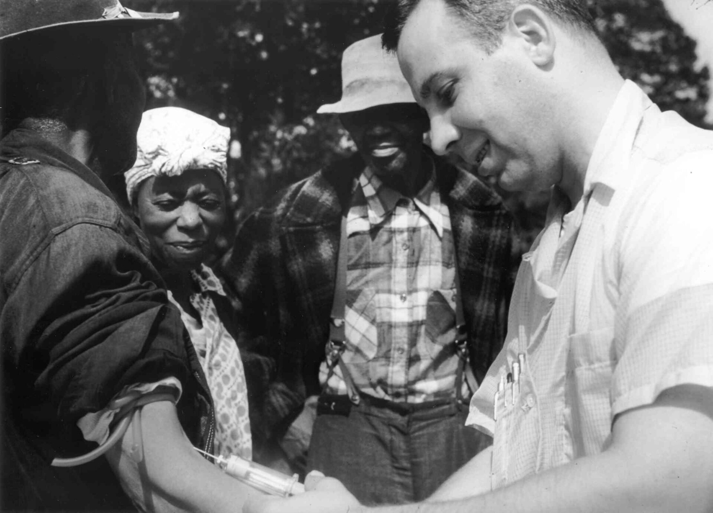
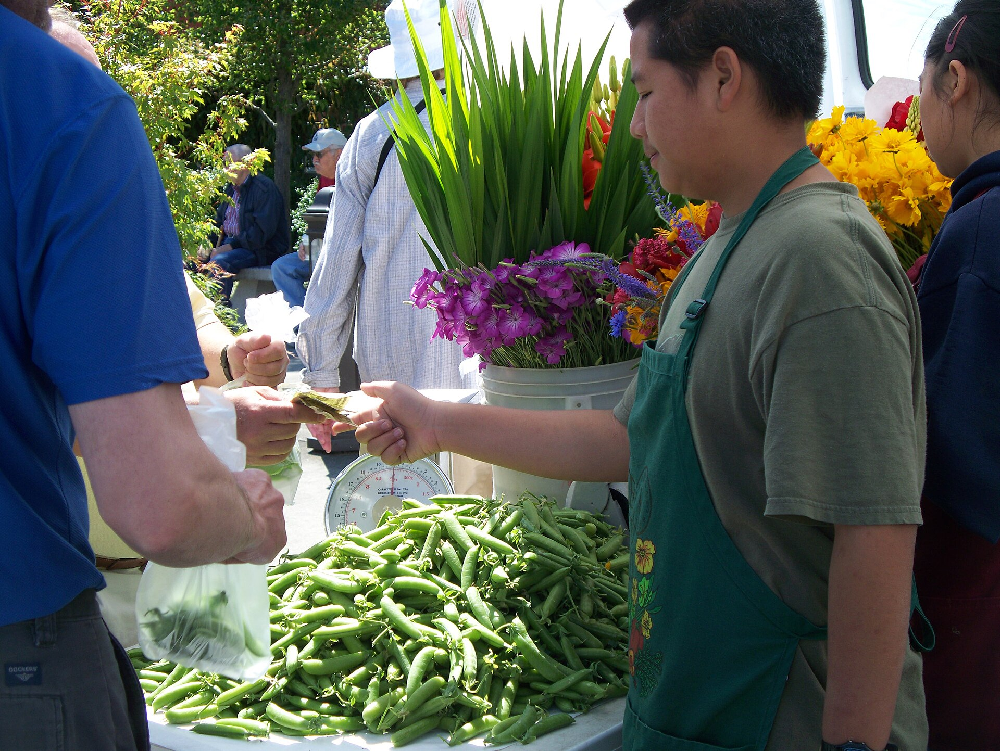

On your own first, then we share as a class.

People decide for themselves whether to take part, fully informed and free of pressure.A shopper can say no to your survey and walk away, no penalty.
Do good, and keep harm as low as possible for the people who help you.Don't reopen something painful for someone when your research question doesn't need it.
Spread the burdens and the benefits of research fairly. Don't load the risk onto people who are already vulnerable.Don't test your riskiest questions on the group with the least power to refuse.
Before anyone answers, they know what the study is, what you'll ask, how long it takes, and that they can stop anytime.A short plain statement at the top of your survey, in your own words.
Anonymous: even you can't link an answer to a person. Confidential: you could, but you promise not to and you protect it."Anonymous" that asks for your email is not anonymous.
You judged six scenarios in the tool. Let's compare where we landed.

Minors, patients, workers, people in recovery, anyone with less power to say no.
On your own. I'll come around.